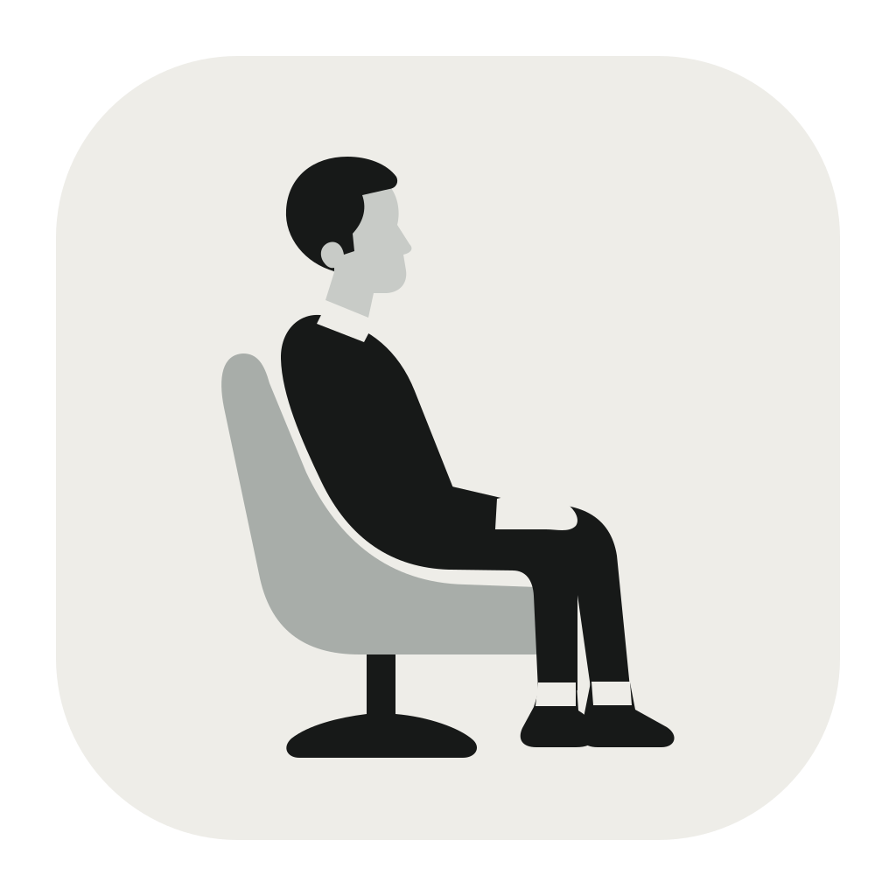

Open Recline
The Mac app starts its local server automatically and shows the connection QR.
iPhone trackpad & keyboard for Mac
Browse, scroll and type from wherever you’re comfortable. Recline turns your iPhone into a wireless trackpad and keyboard, while a small menu-bar app keeps your Mac connected.
Download Recline for Mac
A remote for the everyday
Use the Mac you already have, with the phone that’s already beside you.
Keep your Mac’s display in view: Recline controls mouse and keyboard input. It does not mirror the screen.
Familiar movements
A roomy trackpad, live typing and Mac shortcuts, all in Safari. Rotate your phone for a wide trackpad on the right and controls on the left.
| On your iPhone | On your Mac |
|---|---|
| One-finger movement & taps | Move the cursor, click, double-tap to select a word, or triple-tap to select a paragraph in compatible apps. |
| Left & right click buttons | Use dedicated mouse buttons. Hold Left click while moving another finger on the trackpad to select text or drag an object. |
| Two-finger movement | Scroll vertically with momentum. Swipe horizontally for Back/Forward, or choose Scroll mode for horizontal scrolling. Tap with two fingers to right-click. |
| Spread / pinch two fingers | Zoom content in Preview and browsers that support native trackpad magnification. Place the Mac pointer over the image, PDF or webpage first; lift both fingers before switching to scrolling. |
| Three-finger swipes | Swipe up for Mission Control, down for App Exposé, and left/right to move between desktop Spaces or full-screen apps. |
| Keyboard & shortcuts | Type into the focused Mac field. Use Quick search, Return, Backspace, arrows and common Command-key shortcuts. |
Start here
Recline bundles its own server and Python runtime. You don’t need Terminal, developer tools or an iPhone app.
Unzip the download, move Recline.app into Applications, and open it. If an earlier Terminal server is running, stop it with Ctrl-C first.
This build isn’t notarized. If macOS blocks it, only proceed if you trust its source: open System Settings → Privacy & Security → Open Anyway. Read Apple’s guidance.
Enable Recline under System Settings → Privacy & Security → Accessibility. If it isn’t listed, click + and select the app from Applications. Recline retries after permission is granted.
Allow incoming connections or local-network access if macOS asks. Keep the Mac and iPhone on a network where they can reach each other.
In Recline, choose Set up HTTPS on iPhone…, then Save certificate profile…. Send the saved profile to your iPhone using AirDrop or another trusted transfer.
Open Settings → General → VPN & Device Management, or Profile Downloaded, and install it. Check that its unique Recline … Local CA name matches the name shown by your Mac.
Open Settings → General → About → Certificate Trust Settings. Enable full trust for that same Recline certificate and confirm.
Installing the profile alone is not enough. This separate switch is required for Safari to accept the connection. Apple’s certificate instructions.
Point the iPhone Camera at Recline’s QR and tap the link. Safari opens the HTTPS address and pairs automatically. If you see a certificate warning, check the setup instead of bypassing it.
After setup
The QR includes the Mac’s address and pairing code, so there’s no code to type.
The Mac app starts its local server automatically and shows the connection QR.
Open the camera link in Safari. Focus the Mac app you want to control, then use the trackpad or tap Keyboard.
Close the QR window to keep working. Choose Quit Recline from the menu to stop the server and disconnect the phone.
Pairing codes expire after two minutes, so scan the current QR. Only one phone controls the Mac at a time; disconnect it before pairing another.
Your devices, connected directly
Your page, pairing and live input use HTTPS and secure WebSockets when certificate verification succeeds. Recline has no cloud relay, ads or telemetry, and does not log the text you type.
HTTPS does not protect a compromised phone or Mac, and other network devices can still attempt to disrupt the server. Never port-forward Recline to the internet, share its private certificate keys, or bypass a Safari certificate warning.
A little help
Check that the matching Recline profile is installed and full trust is enabled under Settings → General → About → Certificate Trust Settings. Compare the certificate name with your Mac, check both devices’ date and time, restart the server and scan its current QR. Do not choose the option to bypass Safari’s warning.
Confirm the shared Wi-Fi or hotspot connection, check the Mac firewall permission, and restart Recline’s server. Guest networks may block devices from communicating even when both are connected. Network settings in the Recline menu lets you select the Mac’s private IPv4 address or change the default port, 8765.
Choose Restart server in Recline, then scan the new QR. Old addresses may no longer reach your Mac. A new server certificate for the selected IP uses the same saved root certificate, so the phone normally keeps its existing trust setup.
Check Recline’s Accessibility permission. For Mission Control, App Exposé and Spaces, confirm the standard Control-arrow shortcuts are enabled under System Settings → Keyboard → Keyboard Shortcuts → Mission Control. The active Mac app must support the shortcut you’re using.
Use Recline 1.2 or later, restart the Mac app, and reload Safari or scan the current QR. Make Preview or your browser active and put the Mac pointer over the image, PDF or webpage before pinching. Spread two fingers to zoom in; pinch inward to zoom out. Lift both fingers before switching to scrolling. Native magnification support and zoom limits depend on the target app and content.
Tap the reset symbol beside the phone’s typing field before continuing. Recline does not read text back from the Mac and cannot detect caret or focus changes made with its physical mouse and keyboard. Text predictions, composition and selection behavior can vary by target app.
Turn off Portrait Orientation Lock in iPhone Control Center, then rotate the phone. Landscape places the control panel on the left and the trackpad on the right.
Quit Recline, replace the app in Applications with the new version, and reopen it. Its saved certificate identity normally carries over. Scan the new QR to reconnect. If macOS asks again, re-enable Accessibility permission for the updated app.
Quit Recline and move the app to the Trash. On iPhone, remove its certificate profile under Settings → General → VPN & Device Management. Removing the app alone does not remove the trusted certificate from your phone.